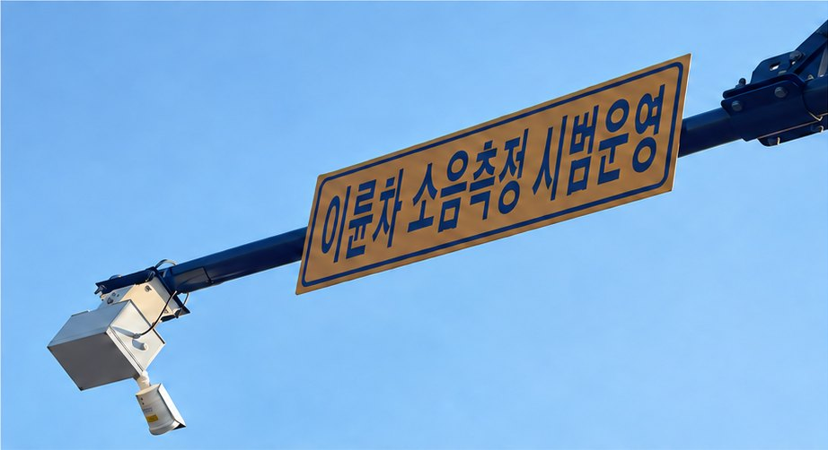

自治体・始興市
始興市ペゴッ地区 二輪車騒音の実証
二輪車の騒音苦情が繰り返されていた、始興市ペゴッ地区のヘソンシムニ路に装置を設置しました。騒音の原因と時間帯を記録しました。取り締まりは行わず、観測と案内だけで運用しました。
設置の概要
- 場所
- 大韓民国 京畿道 始興市 ペゴッ地区 ヘソンシムニ路
- 設置規模
- 4か所、装置4台
- 設置先
- 車両検知システムの支柱
- 承認期間
- 2025年12月1日〜2026年2月27日（最初の承認）
- 運用方法
- 取り締まりは行わず、観測と案内のみ
結果
- 設置地域の騒音苦情
- 約60%の減少2025年12月の設置から2026年6月まで。設置地域に限った数値
- 音の分類精度
- 95%以上目標達成の報告2025年 最終報告書の基準
- 風・雨の条件での性能
- 約88%気象条件ごとの運用を確認した結果
- 騒音レベルの換算基準距離
- 5.5m距離に応じて騒音レベルを補正するための基準
※ 苦情の減少は、設置地域に限った数値です。2026年9月に始興市から口頭で確認を得ています。観測と案内が住民の行動変化にどこまで寄与したかは、別途分析中です。